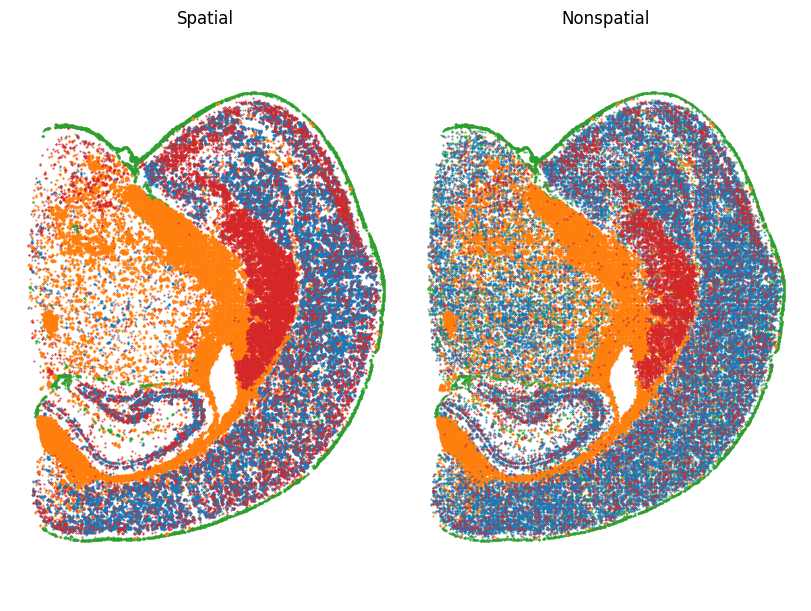
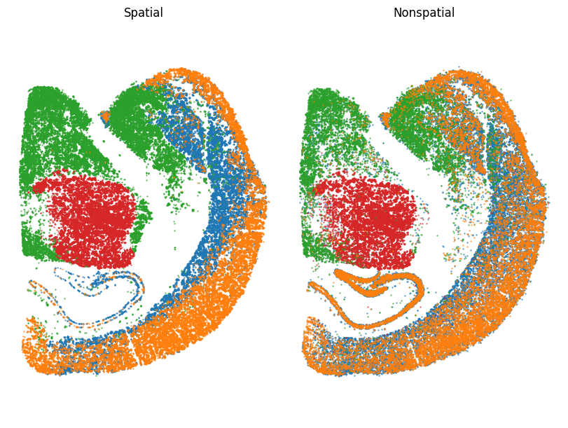
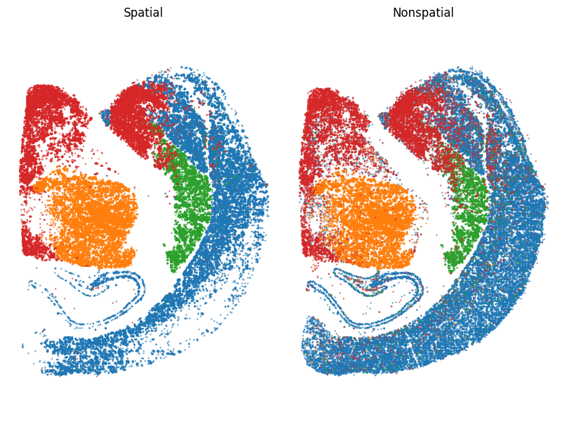

Banksy图构建改进

复现有无空间方法
Spatial色彩分布更规整，不同颜色的区域边界相对清晰，空间结构特征保留较好，能体现样本在空间维度的分布规律；Nonspatial颜色分布相对零散、混杂，空间关联性被弱化，类别区分在空间布局上不如有空间方法清晰，反映出无空间约束时，样本分布的空间特征未得到有效利用，聚类或分析结果的空间结构性较差

细胞过滤优化后有无空间方法
Spatial：颜色分布更贴合类器官空间结构，不同区域边界清晰，在空间上有序排列，保留样本实际空间关联。Nonspatial：颜色分布零散、混杂，空间结构性被破坏，丢失样本空间维度的分布规律 。

图构建后有无空间方法
Spatial 结果中，颜色分布更贴合样本空间结构，类别边界与空间区域关联紧密；Nonspatial 因忽略空间位置，类别分布更零散，丢失部分空间约束下的有序性 。